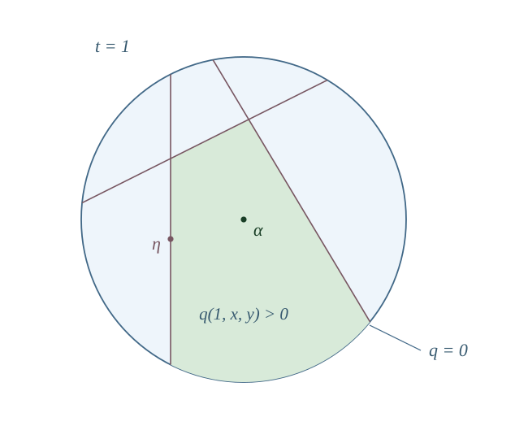

The period determines which integral classes have type \((1,1)\text{.}\) It does not determine which positive classes are Kähler. The additional data are chambers separated by negative classes. This chapter describes those chambers and distinguishes walls that contract divisors from walls that separate small birational models.
Section7.1Projectivity and positivity
Recall the projectivity criterion of Theorem 2.9 and the definition of nef classes. A nef line bundle of positive BBF square defines a birational contraction, as follows.
On a projective manifold, the nef cone of divisor classes is the intersection of this closure with \(\NS(X)_\R\text{;}\) it is also characterized by nonnegative degree on every curve. The two conventions live in different ambient spaces. We write
when \(X\) is projective. The ample cone is \(\mathcal K_X\cap\NS(X)_\R\text{.}\)
Definition7.1.
A line bundle \(L\) is semiample if \(L^{\otimes m}\) is generated by global sections for some \(m>0\text{.}\) On a projective variety of dimension \(d\text{,}\) it is big if
Let \(L\) be a nef line bundle on an IHS manifold with \(q_X(c_1(L))>0\text{.}\) Then \(X\) is projective and \(L\) is big and semiample. A sufficiently divisible power defines, after Stein factorization, a birational morphism \(f:X\to Y\) onto a normal projective variety. An irreducible curve \(C\) is contracted if and only if \(\int_Cc_1(L)=0\text{.}\)
Proof.
Projectivity follows from Theorem 2.9. Fujiki’s identity gives \(\int_Xc_1(L)^{2n}=c_Xq_X(c_1(L))^n>0\text{.}\) We use the general theorem that a nef line bundle on a projective variety is big precisely when its top self-intersection is positive; see [Laz04, §2.2]. The base-point-free theorem then applies, since \(X\) is smooth, \(K_X\cong\cO_X\text{,}\) and \(L\) is nef and big. In this specialization it asserts that all sufficiently large powers are generated; see [KM98, §3.2]. These two positivity theorems are quoted.
Take the Stein factorization of the resulting morphism. Then \(L^{\otimes m}\cong f^*A\) for an ample bundle \(A\) on a normal projective \(Y\text{.}\) The positive top self-intersection forces \(\dim Y=\dim X\text{.}\) Thus \(f\) is generically finite. Its Stein condition \(f_*\cO_X=\cO_Y\) makes the generic degree one, so \(f\) is birational. Finally, \(\deg(L|_C)=0\) is equivalent to \(\deg(f^*A|_C)=0\text{;}\) ampleness of \(A\) makes this equivalent to \(f(C)\) being a point.
Theorem7.3(Huybrechts–Boucksom).
For an IHS manifold \(X\text{,}\)
\begin{equation*}
\mathcal K_X=\left\{a\in\mathcal C_X:\int_Ca>0\text{ for every rational curve }C\subset X\right\}.
\end{equation*}
Here a rational curve is an irreducible reduced curve whose normalization is \(\PP^1\text{.}\) The theorem includes nonprojective \(X\text{;}\) see [Mar11, Theorem 5.4(1)] and [AV21, Theorem 1.2]. The restriction \(a\in\mathcal C_X\) is part of the statement. Positivity on rational curves alone is not a criterion outside that component.
Corollary7.4.
If \(X\) has no rational curves, then \(\mathcal K_X=\mathcal C_X\text{.}\) In particular this holds when \(\Pic(X)=0\text{.}\)
Proof.
The first assertion follows directly from the theorem. For the second, suppose a curve \(C\) exists. Nondegeneracy of the rational BBF form gives a class \(z_C\in H^2(X,\Q)\) characterized by
Integration over a complex curve annihilates \(H^{2,0}(X)\) and \(H^{0,2}(X)\text{.}\) The Hodge orthogonality of \(q_X\) therefore makes \(z_C\) a rational \((1,1)\) class. It is nonzero because a Kähler class has strictly positive integral on \(C\text{.}\) An integral multiple would define a nontrivial line bundle by Proposition 2.6, a contradiction. Thus there are no curves at all.
Corollary7.5.
If \(\Pic(X)=\Z L\) and \(q_X(c_1(L))>0\text{,}\) then exactly one of \(L,L^{-1}\) is ample.
Proof.
The projectivity criterion supplies an ample bundle \(A\text{.}\) Write \(A=L^{\otimes m}\) with \(m\ne0\text{.}\) A line bundle is ample if a positive tensor power is ample, so \(L\) is ample when \(m>0\) and \(L^{-1}\) is ample when \(m<0\text{.}\) They cannot both be ample, since their classes belong to opposite components of the positive-square locus.
Section7.2A wall on a K3 surface
Let \(S\) be a projective K3 surface and \(R\subset S\) a smooth rational curve. The adjunction formula gives \(R^2=-2\text{.}\) Choose an ample class \(H\text{,}\) and set
Direct calculation gives \(a\cdot R=0\) and \(a^2=H^2+(H\cdot R)^2/2>0\text{.}\) Also \(a\cdot H>0\text{,}\) so \(a\) belongs to the positive cone.
For any irreducible curve \(C\ne R\text{,}\) the intersection \(C\cdot R\) is nonnegative, hence \(a\cdot C>0\text{.}\) For every \(\varepsilon>0\text{,}\) the class \(a+\varepsilon H\) is positive and has positive integral on every rational curve; it is therefore Kähler. Thus \(a\) is nef but not Kähler. Positive BBF square by itself permits boundary classes.
The reflection in \([R]\) exchanges the two sides of this wall, as calculated in Example 6.12. Thus preservation of the positive cone by a Hodge isometry does not guarantee preservation of the Kähler cone. The general K3 chamber theorem is discussed in [Huy16, Chapter 8].
Section7.3Identifying the second cohomology of birational models
A bimeromorphic map \(f:X\dashrightarrow Y\) between IHS manifolds is an isomorphism outside subsets of codimension at least two. It induces an integral Hodge isometry
See [Huy99, Lemma 2.6]. A common resolution and the graph correspondence define the same map on \(H^2\text{.}\)1
When discussing several birational models, all their degree-two classes are transported to \(H^2(X)\) by these maps. The Hodge structure and pairing are then fixed, while their Kähler cones can be different.
where \(Y\) runs through IHS manifolds bimeromorphic to \(X\text{.}\) Its closure is taken in \(H^{1,1}(X,\R)\text{.}\)
This union need not be convex. Distinct Kähler chambers can be separated by a hyperplane missing from the union even when that hyperplane belongs to its closure. The distinction matters when comparing an open union with a closed movable cone.
For projective \(X\text{,}\) a line bundle \(L\) is movable if \(|L|\) is nonempty and its base locus has codimension at least two. Let \(\operatorname{Mov}(X)\) be the convex cone generated by the first Chern classes of such line bundles. We use \(\overline{\operatorname{Mov}}(X)\) for its closure in \(\NS(X)_\R\text{.}\)2
We use the divisorial Zariski decomposition theorem behind this identity without proof; see [Mar11, Proposition 5.6 and Lemma 6.22]. It follows that birational changes reorganize nef chambers inside a fixed closed movable cone.
Section7.4MBM classes and chamber walls
The class \(z_C\) defined in Corollary 7.4 identifies rational curve functionals with rational degree-two classes by the BBF form. This identification need not be integral. For example, denominators can occur when the BBF lattice is not unimodular. A negative rational ray has a primitive integral generator, whose square depends on this integral normalization.
Definition7.7.
Let \(0\ne z\in H^2(X,\Z)\cap H^{1,1}(X)\) have \(q_X(z)<0\text{.}\) It is monodromy birationally minimal, abbreviated MBM, if there are a monodromy isometry \(\gamma\in\Mon^2(X)\) and a birational model \(f:X\dashrightarrow Y\) such that \((f^*)^{-1}\gamma(z)\) is of type \((1,1)\) on \(Y\) and its orthogonal hyperplane contains a wall of \(\mathcal K_Y\text{.}\) A wall here means that its intersection with \(\partial\mathcal K_Y\cap\mathcal C_Y\) contains a nonempty relatively open subset of that hyperplane.
This is [AV15, Definition 1.13] in cohomological notation. Replacing \(z\) by a nonzero rational multiple does not change its hyperplane or MBM property. We usually take primitive integral representatives to avoid listing the same wall repeatedly.
Theorem7.8(Amerik–Verbitsky).
The MBM property is invariant under deformation and parallel transport as long as the class remains of type \((1,1)\text{.}\) Let \(\Delta_X\) be the primitive integral MBM classes of type \((1,1)\) on \(X\text{.}\) Then \(\mathcal K_X\) is a connected component of
If \(b_2(X)\geq5\text{,}\) every component \(D\) admits a birational model \(f:X\dashrightarrow Y\) and a Hodge monodromy isometry \(\gamma\in\Mon^2(X)\) such that \(\gamma(D)=f^*(\mathcal K_Y)\text{.}\)
We quote the deformation and chamber assertions from [AV15, Theorems 1.17 and 1.19]. These basic MBM assertions have no additional lower bound on \(b_2\text{.}\) For the final identification by Hodge monodromy, we use the global Torelli range of Chapter 6 and the Kähler-type chamber formulation in [Mar11, Proposition 5.14]. The definition allows monodromy and birational changes because the existence of an extremal curve on one particular model is not itself deformation-invariant. On a special fiber a curve may split into components. Its transported negative class can remain MBM even if it no longer determines an extremal ray on that model.
The notation \(z^\perp\) refers to a full hyperplane in \(H^{1,1}(X,\R)\text{.}\) Its part inside the positive cone may contain several walls. An MBM hyperplane need not support the Kähler cone of the original model. The cone is recovered by taking the chamber containing a chosen Kähler class, not by imposing one common sign on all classes in \(\Delta_X\text{,}\) which contains both \(z\) and \(-z\text{.}\)
A negative integral class in \(H^2(X,\Z)\) is also called MBM if it becomes an MBM class on some deformation where its parallel transport has type \((1,1)\text{.}\) Deformation invariance makes this independent of the chosen deformation on which it has that type; see [AV20b, Definition 3.15]. This convention defines a monodromy-invariant set in the full lattice, including classes that are not of type \((1,1)\) on \(X\text{.}\) In the chamber theorem, \(\Delta_X\) is the subset that is of type \((1,1)\) on \(X\text{.}\)

A blue unit disk is cut by three straight chords. A central green chamber contains a point alpha. A point eta on its left chord is inside the disk but on the chamber boundary. The circle is the isotropic boundary; the straight chords are orthogonals of negative vectors.
Figure7.9.A slice \(t=1\) of the cone \(t^2-x^2-y^2>0\text{.}\) Three negative-vector orthogonals cut the disk into chambers. The green chamber contains \(\alpha\text{;}\) the point \(\eta\) lies on one of its walls while still having positive square.
The slice in Figure 7.9 is a Lorentz-space model. Its circle is the isotropic boundary, whereas its chords lie inside the positive cone. This separates two ways in which a nef class can fail to be Kähler: it can be isotropic, or it can have positive square and lie on a wall.
For a prime divisor \(E\) with \(q_X([E])<0\text{,}\) the wall has divisorial significance. Such divisors are called prime exceptional divisors. Their inequalities define the fundamental exceptional chamber
\begin{equation*}
\mathcal F_X=\{a\in\mathcal C_X:q_X(a,[E])>0\text{ for every prime exceptional divisor }E\}.
\end{equation*}
This chamber is convex. One has \(\mathcal{BK}_X\subset\mathcal F_X\subset\overline{\mathcal{BK}_X}\text{,}\) and, for projective \(X\text{,}\) its intersection with \(\NS(X)_\R\) is the interior of the movable cone; see [Mar11, Proposition 5.6 and Lemma 6.22]. Additional MBM walls can divide this region into the Kähler chambers of small birational models.
Section7.5Lagrangian projective spaces and local flops
Let \(P\cong\PP^n\) be a Lagrangian submanifold of a holomorphic symplectic \(2n\)-fold. The symplectic form induces an isomorphism
It is well-defined because \(\sigma\) vanishes on \(T_P\text{.}\) Its kernel is zero because the symplectic orthogonal of the Lagrangian subspace \(T_P\) is \(T_P\) itself. The ranks agree, proving the isomorphism.
Consider the explicit model \(T^*\PP^n\text{,}\) whose zero section has this normal bundle. For \(n\geq2\text{,}\) blowing up its zero section produces an exceptional divisor \(\PP(\Omega_{\PP^n}^1)\text{,}\) with the convention of one-dimensional subspaces. Its points can be identified with incident pairs \((\ell,H)\text{,}\) where a line \(\ell\subset\C^{n+1}\) lies in a hyperplane \(H\text{.}\) Indeed, a nonzero cotangent vector at \(\ell\text{,}\) up to scale, is a nonzero map \(\C^{n+1}/\ell\to\ell\) up to scale, and its kernel determines \(H/\ell\text{.}\)
The incidence variety has projections to \(\PP^n\) and its dual. Contracting along the other projection exchanges the two cotangent models. This is the local Mukai flop. It is an isomorphism away from the zero sections, so it changes the geometry of codimension at least two. For a compact embedding, existence of a global second contraction and the Kähler or projective property of its target are additional assertions; the local description alone does not establish them.
The two contractions in this model can be written explicitly. Let \(V=\C^{n+1}\) and
equipped with its reduced affine variety structure. For rank at most one, the trace-zero condition is equivalent to \(A^2=0\text{.}\) A point of \(T^*\PP(V)\) is a pair \((\ell,A)\) with \(\operatorname{im}A\subset\ell\subset\ker A\text{.}\) Forgetting \(\ell\) maps it to \(Z\text{.}\) At a nonzero point of \(Z\text{,}\) the line is forced to be \(\operatorname{im}A\text{;}\) over zero the fiber is \(\PP(V)\text{.}\) The dual resolution remembers the hyperplane \(H=\ker A\) instead. The common blowup remembers the incident pair \((\ell,H)\text{,}\) and the scalar endomorphism from \(V/H\) to \(\ell\) is its remaining fiber coordinate. Its zero section is the exceptional incidence divisor. This describes both contractions without inferring an analytic neighborhood theorem from a normal-bundle computation.
This explains why a small wall need not be detected by a negative divisor. A line in the Lagrangian projective space can have zero degree against a nef boundary class even though no divisor is contracted. Moduli spaces of sheaves and stable objects provide global instances in which the two chambers and the wall-crossing maps can be constructed.
Example7.10.
Let \(R\subset S\) be a smooth rational curve on a projective K3 surface. The closed submanifold \(R^{[2]}=\Sym^2R\cong\PP^2\) of \(S^{[2]}\) is Lagrangian. On the open set of two distinct points the symplectic form is the sum of the surface forms, both zero on the two curve directions. Its restriction is holomorphic, so it vanishes everywhere on \(\PP^2\text{.}\)
Write \(h=c_1(\cO_{\PP^2}(1))\text{,}\) let \(\ell\) be a line in this plane, and let \(\delta\) be half the integral class of the Hilbert–Chow exceptional divisor \(E\text{,}\) as in (5.2). A class \(a\in H^2(S)\) restricts to \((a\cdot R)h\text{.}\) This can be tested on the line of unordered pairs \(p+q\) with \(p\) fixed and \(q\in R\) varying. The nonreduced pairs \(2p\) form a conic in \(\Sym^2R\text{.}\) The restriction of \(E\) has multiplicity one: in the local chart \((a,b,r,t)\) of Example 5.8, with \(R=\{w=0\}\text{,}\) the plane is \(b=t=0\) and \(E\) is \(r=0\text{.}\) Thus \(2\delta|_{\PP^2}=2h\text{,}\) so \(\delta\cdot\ell=1\text{.}\)
Using the orthogonal decomposition (5.2), with \(q(\delta)=-2\text{,}\) the rational BBF dual of the curve functional is therefore
Indeed, \(q(z_\ell,a)=a\cdot R\) and \(q(z_\ell,\delta)=1\text{.}\) The corresponding primitive integral class is \(2[R]-\delta\text{,}\) whose square is \(-10\text{.}\) The square \(-5/2\) describes the rational curve functional; the square \(-10\) describes its primitive integral degree-two representative. They refer to the same orthogonal hyperplane, with different normalizations.
Section7.6Periods of hyperkähler metrics
Fix the smooth manifold \(M\) underlying an IHS manifold \(X\) of dimension \(2n\text{,}\) and let \(b=b_2(M)\text{.}\) A hyperkähler metric determines the positive three-plane
oriented by the displayed triple. Rotating \((I,J,K)\) by \(SO(3)\) preserves this orientation and does not change the metric. The induced complex structures form the sphere in this oriented three-space, as in Chapter 3.
Proposition7.11.
The three Kähler classes are mutually BBF-orthogonal, with a common square \(r>0\text{,}\) and
Thus unit volume fixes \(r=((2n)!/c_X)^{1/n}\text{.}\) Scaling the metric by \(a>0\) multiplies the Kähler forms by \(a\text{,}\) their BBF squares by \(a^2\text{,}\) and the volume by \(a^{2n}\text{,}\) while preserving \(P_g\text{.}\)
Proof.
Orthogonality and equality of the three squares are Proposition 3.8. For any induced structure, the Riemannian volume form is \(\omega_I^{2n}/(2n)!\text{.}\) Integrating and applying Fujiki gives the formula. The scaling assertions follow from \(\omega_I(u,v)=g(Iu,v)\text{,}\) the quadratic nature of \(q_X\text{,}\) and the displayed volume formula.
Definition7.12.
Let \(\mathcal T_{\mathrm{met}}\) be the space of unit-volume hyperkähler metrics on \(M\) with holonomy exactly \(\Sp(n)\text{,}\) modulo pullback by \(\operatorname{Diff}_0(M)\text{,}\) the identity component of the diffeomorphism group. Its period map is \([g]\mapsto P_g\text{.}\) For a connected component \(\mathcal C\text{,}\) let \(\mathscr G\) be the component of the Grassmannian of oriented positive three-planes containing its periods, and let \(\Delta_{\mathcal C}\) be the primitive integral MBM classes belonging to its compatible complex deformation component.
Equivalently, begin with unit-volume quadruples \((g,I,J,K)\text{,}\) divide by rotation of the triple through \(SO(3)\text{,}\) and then divide by \(\operatorname{Diff}_0(M)\text{.}\) Allowing arbitrary volume adds a positive real scale. Retaining \(I\) but forgetting \(J,K\) instead gives a space of pairs \((g,I)\) whose projection to \(\mathcal T_{\mathrm{met}}\) has twistor fiber \(S^2\text{.}\) Thus the full triple has rotation fiber \(SO(3)\text{,}\) whereas a chosen induced complex structure has fiber \(SO(3)/SO(2)\text{.}\)
Theorem7.13(Amerik–Verbitsky; Looijenga).
Suppose \(b\geq5\text{.}\) On each connected component \(\mathcal C\text{,}\) the metric period map is a diffeomorphism onto the open subset
We quote the componentwise statement from [Loo21, §3.4 and Corollary 5.4], in the Torelli range used above; see also [AV15m, Definitions 4.5–4.8 and Theorem 4.9]. Looijenga’s \(\mathscr T_{\mathbb H}\) is this metric space; his \(\mathscr T_{\mathrm{HK}}\) retains the chosen complex structure. The assertion is about one connected component. Elements of the mapping class group acting trivially on \(H^2\) can move components; no single global injectivity statement for their union follows.
The excluded planes have a direct geometric meaning. If \(\delta\perp P_g\text{,}\) then \(\delta\) has type \((1,1)\) for every induced structure and pairs to zero with its Kähler class, contradicting Theorem 7.8. Conversely, for a plane outside the excluded sets, choose a generic oriented two-plane inside it. The countably many MBM classes can all be avoided as Hodge classes: each class has nonzero projection to \(P\) and excludes just one unoriented two-plane in \(P\text{.}\) Period surjectivity in the compatible complex deformation component supplies a complex structure; its Kähler cone is the positive cone because it has no Hodge MBM classes. The compatible normal ray is then Kähler, and the Calabi–Yau theorem constructs a metric with period \(P\text{.}\) The global injectivity is the additional assertion of the quoted theorem.
Proposition7.14.
The space \(\mathscr G\text{,}\) and hence each component of the unit-volume metric Teichmüller space in the preceding theorem, has real dimension \(3(b-3)\text{.}\) For a negative class \(\delta\text{,}\) the locus \(\{P:P\subset\delta^\perp\}\) has real codimension three.
Proof.
Near a positive three-plane \(P\text{,}\) every nearby plane is the graph of a linear map \(A:P\to P^\perp\text{.}\) Positivity is an open condition on \(A\text{.}\) Consequently
If \(q_X(\delta)<0\text{,}\) its orthogonal complement has signature \((3,b-4)\text{.}\) Its positive-three-plane Grassmannian therefore has dimension \(3(b-4)\text{,}\) proving the codimension statement.
For a K3 surface, \(b=22\text{:}\) the unit-volume metric space has local real dimension fifty-seven, and including scale gives fifty-eight. Retaining a chosen induced complex structure adds two real dimensions; retaining the full quaternionic triple adds three. These additions come from the respective sphere and rotation fibers.